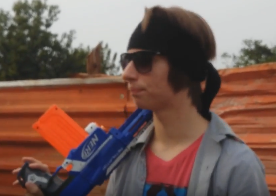

Menu
Família do Pesadelo: Destruidor

Nome
Destruidor
Lado
Vilões
Idade
30 anos
Poder principal
Armas de fogo
Primeira aparição
3rd Season, Episode 15
Personalidade
Orgulhoso, confiante e destemido
Extras
O ultimo dos amigos do Pai à aparecer